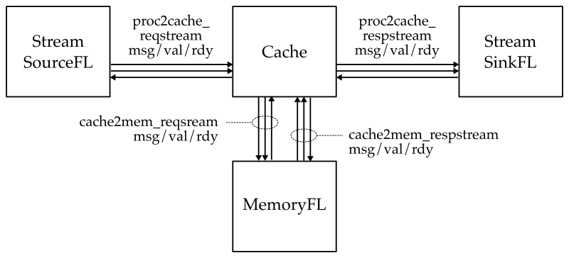
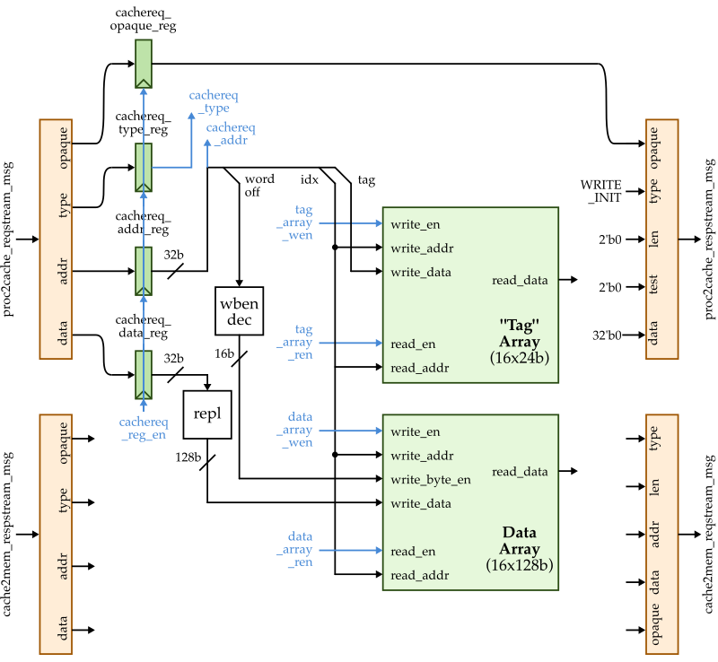
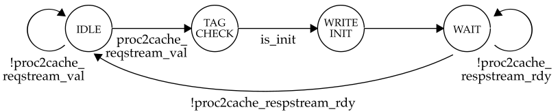

# ECE 4750 Section 6: Lab 3 Head Start
Table of Contents
- Cache Walk-Through
- Using the Cache Functional-Level Model
- Implementing and Testing Write Init Transaction
- More Testing
This discussion section serves to introduce students to the
basic cache modeling approach and testing strategy we will be
using to implement a blocking FSM cache in lab 3. You should log
into the ecelinux servers using the remote access
option of your choice and then source the setup script.
% source setup-ece4750.sh
% cd $HOME/ece4750/2025F
% git pull
% cd sections/section6
% TOPDIR=$PWD
% mkdir $TOPDIR/buildCache Walk-Through
The following figure shows the high-level interface for our cache. The cache has two memory interfaces. One enables the processor to send memory requests and receive responses from the cache, and the other enables the cache to send memory requests and receive responses from main memory. All interfaces are implemented using the latency-insensitive val/rdy micro-protocol.

We provide students a trivial functional-level model of a cache
which essentially just directly forwards requests from the
processor to main memory and then directly forwards reponses from
main memory back to the processor. You can find the FL model in
lab3_mem/CacheFL.py. This is what the interface looks
like in Verilog for an RTL implementation of the cache.
module lab3_mem_CacheSimple
#(
parameter p_num_banks = 1 // Total number of cache banks
)
(
input logic clk,
input logic reset,
// Processor <-> Cache Interface
input mem_req_4B_t proc2cache_reqstream_msg,
input logic proc2cache_reqstream_val,
output logic proc2cache_reqstream_rdy,
output mem_resp_4B_t proc2cache_respstream_msg,
output logic proc2cache_respstream_val,
input logic proc2cache_respstream_rdy,
// Cache <-> Memory Interface
output mem_req_16B_t cache2mem_reqstream_msg,
output logic cache2mem_reqstream_val,
input logic cache2mem_reqstream_rdy,
input mem_resp_16B_t cache2mem_respstream_msg,
input logic cache2mem_respstream_val,
output logic cache2mem_respstream_rdy
);Notice that we are using SystemVerilog structs to encode the memory requests and responses. Here is the memory request struct format:
76 74 73 66 65 34 33 32 31 0
+------+---------------+------------------+------+------------------+
| type | opaque | addr | len | data |
+------+---------------+------------------+------+------------------+And here is the memory response struct format:
46 44 43 36 35 34 33 32 31 0
+------+---------------+------+------+------------------+
| type | opaque | test | len | data |
+------+---------------+------+------+------------------+The baseline implementation for this lab will be a 256B direct-mapped cache with 16B cache lines and a write-back, write-allocate write policy. In this discussion section, we provide you a simple cache that partially implements the write init transaction. The block diagram for how the datapath unit is shown below.

Here is the FSM for the write init transaction.

Take a look at the code in the following files to learn more about how the simple cache is implemented.
lab3_mem/CacheSimpleDpath.vlab3_mem/CacheSimpleCtrl.vlab3_mem/CacheSimple.v
Using the Cache Functional-Level Model
Let’s take a look at a basic test for the write init
transaction. They primary way we will test our processors is by
writing very small sequences of memory requests and the expected
memory responses. Take a look at the test in
lab3_mem/test/simple_test.py to see how to write such
tests.
def test( cmdline_opts ):
msgs = [
# type opq addr len data type opq test len data
req( 'in', 0x0, 0x1000, 0, 0xdeadbeef ), resp( 'in', 0x0, 0, 0, 0 ),
]
model = TestHarness( CacheFL(), msgs[::2], msgs[1::2] )
run_sim( model, cmdline_opts, duts=['cache'] )We use helper python functions to create the desired memory requests and expected memory responses. This test has a single write init transaction. As awlays, you should always make sure your tests pass on the FL model before using them to test your RTL model. Let’s run the above test on our FL model.
% cd $TOPDIR/build
% pytest ../lab3_mem/test/simple_test.py -sUse the -s command line option so you can see the
linetrace. Verify that you can see the stream source sending
memory requests to cache which then forwards those requests to
main memory. Also verify that you can see the corresponding
response coming back from main memory to the cache which then
forwards this response back to the stream sink.
Implementing and Testing the Write Init Transaction
Let’s try the same test on the RTL implementation of the simple
cache. Modify run_test to use the
CacheSimple like this:
run_sim( CacheSimple, cmdline_opts, duts=['cache'] )Then rerun the test. The test will not pass since we have not implemented the write init transaction yet.
The first step is to figure out the address mapping. Find the
address mapping code in the
lab3_mem/CacheSimpleDpath.v:
// Address Mapping
logic [1:0] cachereq_addr_byte_offset;
logic [1:0] cachereq_addr_word_offset;
logic [3:0] cachereq_addr_index;
logic [23:0] cachereq_addr_tag;
generate
if ( p_num_banks == 1 ) begin
// assign cachereq_addr_byte_offset = cachereq_addr[??:??];
// assign cachereq_addr_word_offset = cachereq_addr[??:??];
// assign cachereq_addr_index = cachereq_addr[??:??];
// assign cachereq_addr_tag = cachereq_addr[??:??];
end
else if ( p_num_banks == 4 ) begin
// handle address mapping for four banks
end
endgenerateNote that your cache needs to support a four-bank
configuration, but this should be one of the last features you
implement. Uncomment and fill in the ?? to extract
the byte offset, word offset, index, and tag from the cache
request address.
The second step is to implement the FSM. Start by implementing the state transition logic, and then implement the state output table. We have implemented the IDLE state for you. The seven control signals are shown in the datapath diagram. The valid bit input and valid write enable signals in the state output table are used to control the valid bits which are stored in the control unit.
Once you have implemented the address map, strate transition logic, and the state output table, rerun our simple test.
% cd $TOPDIR/build
% pytest ../lab3_mem/test/simple_test.py -sYou should see a line trace like this:
tag array
-------------------
cachereq state 0 1 2 16 cacheresp
1r > (I [ - | - | - |...| - ]) > [ ]...>...[ ] >
2r > (I [ - | - | - |...| - ]) > [ ]...>...[ ] >
3: > (I [ - | - | - |...| - ]) > [ ]...>...[ ] >
4: in:00:00001000:0:deadbeef > (I [ - | - | - |...| - ]) > [ ]...>...[ ] >
5: . > (TC[ - | - | - |...| - ]) > [ ]...>...[ ] >
6: . > (IN[ - | - | - |...| - ]) > [ ]...>...[ ] >
7: . > (W [010| - | - |...| - ]) > [ ]...>...[ ] > in:00:0:0:00000000
8: > (I [010| - | - |...| - ]) > [ ]...>...[ ] >
9: > (I [010| - | - |...| - ]) > [ ]...>...[ ] >
10: > (I [010| - | - |...| - ]) > [ ]...>...[ ] >
11: > (I [010| - | - |...| - ]) > [ ]...>...[ ] >
12: > (I [010| - | - |...| - ]) > [ ]...>...[ ] >You can see the write init request going into the cache on cycle 4, the cache transitioning through the I -> TC -> IN -> W states, the tag array being updated in the IN state, and the write init resopnse being returned from the cache on cycle 7.
More Testing
Add a second write init transaction in the given test case. Use an address which results in the second write init transaction writing the second set in the cache. Run the test and verify from the line trace that the tags in set 0 and set 1 are now valid.
Now add a total of 16 write init transactions. Each transaction should go to a different set in the cache. Verify the cache is functioning as expected using the line trace.